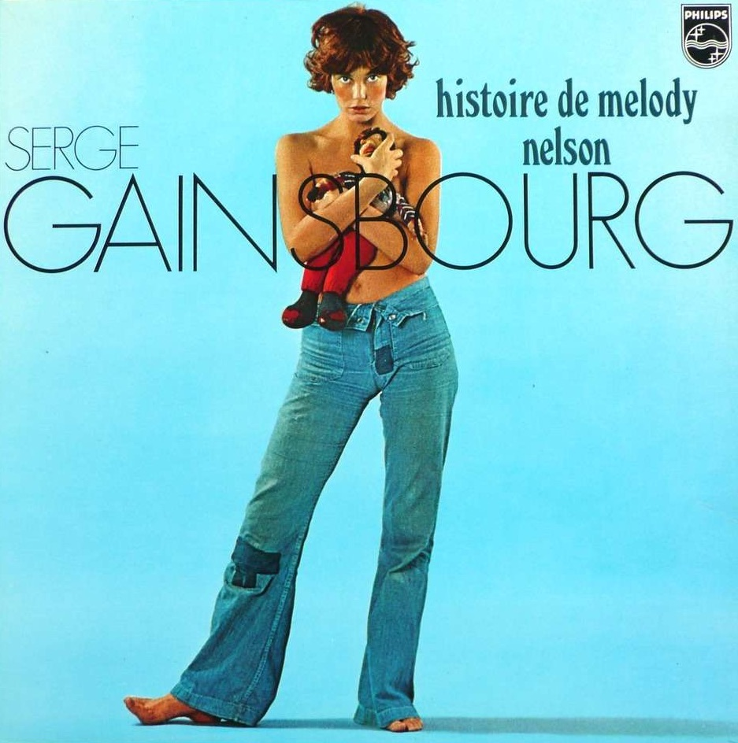
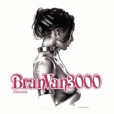
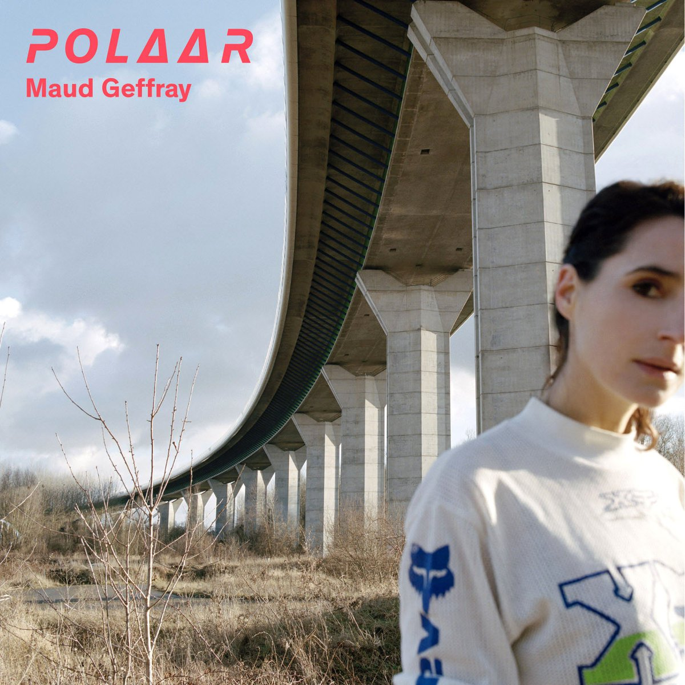

After 18 years of international experience in the energy sector, I decided to dedicate myself to something meaningful: painting giraffes.
This page has been coded during the FullStack program @LeWagon.
LinkedIn - public
Facebook
Twitter
My Favorite albums

Gainsbourg - Melody Nelson

Bran Van 3000 - Discosis

Maud Geffray - Polaar